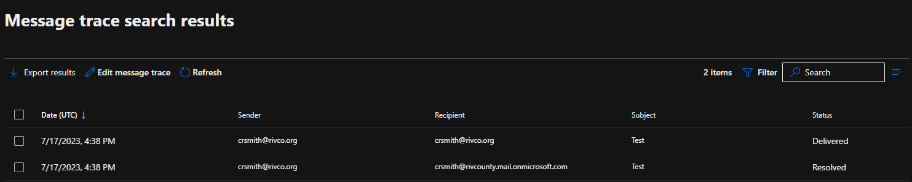

Introduction¶
In regards to message tracing, there are essentially 3 places to check:
-
ProofPoint (anything inbound/outbound to or from external addresses)
-
On-Prem mail servers (anything sent through SMTP, such as printers or intranet websites)
-
Exchange Online (Inbound emails caught up in ProofPoint or Exchange On-Prem will not make it here)
ProofPoint¶
ProofPoint can be used for searching email that has been sent in/out of the domain. This will return no results if searching for mailsend between two @rivco.org users. For a general outline of the mail process, refer to mail flow in general information

In the image above, Smart Search has various fields to search for. The default is 24 hour search, however can be extended as needed. You can see under the Final Action column an emails status. Ideally Continued is the status, however other status descriptions such as Quarantined; Discarded may also apply
{kind=link}
The above being an example of such a label. In this case, the email is in the users quarantine which can be released by the user once logging into https://myspam.rivco.org:10020/euweb/login
Example

By expanding the + icon next to the date field, you can expand the details. This was flagged as inbound_bulk so was treated as spam, but can safely be allowed as a sender by the user. Additionally, the sender address isn't marked as a normal email. This traditionally occurs when the email blast is through an external SMTP of some sort.
On-Prem Exchange¶
Remote to RCIT-16EXCH01 or RCIT-16EXCH02 and open Exchange Management Shell (or remote session through local shell to the server)
Once connected via the shell, you can run a Get-MessageTrackingLog command
Example
Get-MessageTrackingLog -server rcit-16exch02 -start "07/13/2023 12:00:00 PM" -Recipient Mpalma@rivco.org -ResultSize unlimited
rcit-16exch01 as well
{kind=link}
Exchange Online¶
Navigate to Message trace in the Exchange Online Admin portal and hit + Start Trace

Enter useful search parameters here for query
Note
Any advanced search or basic query over 10 days will need to queue a report for later download and review. A basic query 10 days or left can be ran and viewed immediately
Common Status fields are Delivered, Resolved and Failed
-
Deliveredindicates that Exchange validates the message was successfully delivered. If the message indicates as such, but the email isn't in the inbox, it's best to check OWA or rules that a user may have to redirect this message elsewhere -
ResolvedA
Resolvedstatus typically indicates it was sent to a secondary SMTP address (such as @rivcounty.mail.onmicrosoft.com) and was routed to the appropriate Exchange address -
Failedindicates the message failed for one reason or another. Typical reasons may include blocked sender/recipient, email doesn't exist, mail rules, etc. The senders NDR response mail should have more specific information on the reason for this email failing
{kind=link}